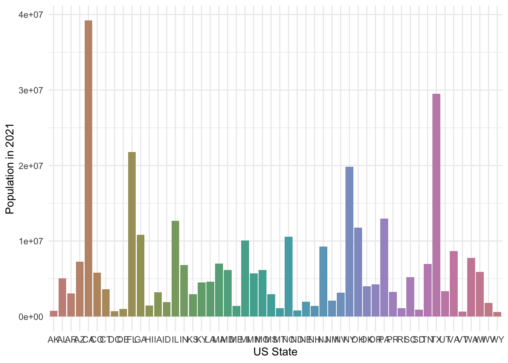
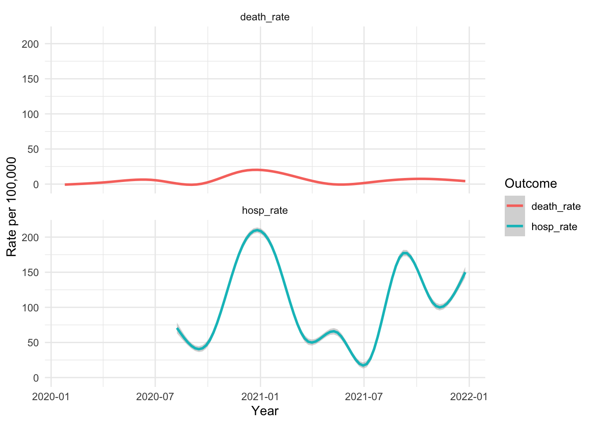

# Read census key
source("~/Downloads/test/PSET_3/census_key.R")PSET_3
COVID-19 Data Analysis
US Census Data
In order to get population information, first obtain a census key from the US census website. Store the key in an R file and load it here.
Find the appropriate API from the US census website and use it to obtain population data for the years 2020 and 2021.
api <- "https://api.census.gov/data/2021/pep/population"
# Write request
request <- request(api) |>
req_url_query(get = I("POP_2020,POP_2021,NAME"),
`for` = I("state:*"),
key = census_key)
# Submit request
request <- request |> req_perform()
# Extract population information
population <- request |> resp_body_string() |>
fromJSON(flatten = TRUE)Change the data to long form and add state abbreviations.
population <- population |> row_to_names(1) |>
as_tibble() |>
select(-state) |>
rename(state_name = NAME) |>
# row_to_names(n) is a janitor function that defines the nth row as the header row
pivot_longer(-state_name, names_to = "year", values_to = "population") |>
mutate(year = str_remove(year, "POP_")) |>
mutate(across(-state_name, as.numeric)) |>
mutate(state = state.abb[match(state_name, state.name)]) |>
# Match the state names in df to US state abbreviations and add them to the df
mutate(state = case_when(
state_name == "District of Columbia" ~"DC",
state_name == "Puerto Rico" ~ "PR",
.default = state))Make a bar plot that shows the population in different US states for the year 2021. Also make a plot to show the percentage of change in the populations in each state from 2020 to 2021.
# Barplot of 2021 populations by state
population |> dplyr::filter(year == 2021) |>
ggplot(aes(x = state, y = population, fill = state)) +
geom_bar(stat = "identity") +
scale_fill_hue(c=40) +
xlab("US State") +
ylab("Population in 2021") +
theme_minimal() +
theme(legend.position = "none")
# Bar plot of percent population change
population |> pivot_wider(names_from = year, values_from = population) |>
mutate(pop_change = ( (`2021` - `2020`)*100/`2020` )) |>
ggplot(aes(x = reorder(state, pop_change), y = pop_change)) +
geom_bar(stat = "identity", fill = "skyblue", width = 0.5) +
coord_flip() +
labs(title = "Percentage Change in State Populations (2020-2021)",
x = "State",
y = "Percent Change") +
theme_minimal()Add CDC region information to the population table.
# Add the following region numbers to population
cdc_regions_list <- list(
"1" = c("Connecticut", "Maine", "Massachusetts", "New Hampshire", "Rhode Island", "Vermont"),
"2" = c("New Jersey", "New York", "Puerto Rico", "Virgin Islands"),
"3" = c("Delaware", "District of Columbia", "Maryland", "Pennsylvania", "Virginia", "West Virginia"),
"4" = c("Alabama", "Florida", "Georgia", "Kentucky", "Mississippi", "North Carolina", "South Carolina", "Tennessee"),
"5" = c("Illinois", "Indiana", "Michigan", "Minnesota", "Ohio", "Wisconsin"),
"6" = c("Arkansas", "Louisiana", "New Mexico", "Oklahoma", "Texas"),
"7" = c("Iowa", "Kansas", "Missouri", "Nebraska"),
"8" = c("Colorado", "Montana", "North Dakota", "South Dakota", "Utah", "Wyoming"),
"9" = c("Arizona", "California", "Hawaii", "Nevada", "American Samoa", "Commonwealth of the Northern Mariana Islands", "Federated States of Micronesia", "Guam", "Marshall Islands", "Republic of Palau"),
"10" = c("Alaska", "Idaho", "Oregon", "Washington"))
cdc_regions <- do.call(rbind, lapply(names(cdc_regions_list), function(region) {
data.frame(region = region, state_name = cdc_regions_list[[region]])
})) |>
mutate(region = factor(as.numeric(region)))
population <- left_join(x = population, y = cdc_regions, by = "state_name")Gathering Information on COVID-19 in The US
First, find appropriate APIs from the CDC website for the number of COVID-19 cases, hospitalisations, deaths, and vaccinations.
# COVID-19 APIs
cases_api <- "https://data.cdc.gov/resource/pwn4-m3yp.json"
hosp_api <- "https://data.cdc.gov/resource/39z2-9zu6.json"
deaths_api <- "https://data.cdc.gov/resource/r8kw-7aab.json"
vac_api <- "https://data.cdc.gov/resource/rh2h-3yt2.json"Obtain the data tables from the APIs and collapse the results into weekly data. Also add information like epidemiological week and year.
Cases
Filter the cases to show those from 2020 and 2021 since we only have population information for those years. I use the end date of the collection week to specify the epidemiological week and year. I collapsed the data to show the total number of cases per week. I also filter out data where a particular state is not present in the population data. This is necessary because in the “state” column of the “cases” table, there are places that are not US states but are included, such as New York City.
# Submit request & extract information
cases <- request(cases_api) |>
req_url_query("$limit" = 10000000) |>
req_perform() |>
resp_body_string() |>
fromJSON(flatten = TRUE)
# Filter data
cases_filtered <- cases |>
semi_join(population, by = "state") |>
mutate(epid_week = epiweek(end_date), epid_year = epiyear(end_date), new_cases = as.numeric(new_cases)) |>
filter(epid_year == 2020 | epid_year == 2021) |>
arrange(state, as_date(end_date)) |>
select(state, epid_week, epid_year, new_cases) |>
filter(!is.na(new_cases)) |>
group_by(state, epid_week, epid_year) |>
summarize(new_cases = sum(new_cases))`summarise()` has grouped output by 'state', 'epid_week'. You can override
using the `.groups` argument.# Define function to get information from API
get_cdc_data <- function(api){
# Write request
df <- request(api) |>
req_url_query("$limit" = 10000000) |>
req_perform() |>
resp_body_string() |>
fromJSON(flatten = TRUE)
# Return data frame
return(df)
}
rm(cases)
gc() used (Mb) gc trigger (Mb) limit (Mb) max used (Mb)
Ncells 1196953 64.0 2384207 127.4 NA 2384207 127.4
Vcells 2533957 19.4 8388608 64.0 16384 7672616 58.6Hospitalisations
Filter the number of hospitalisations to show those from 2020 and 2021 since we only have population information for those years. I use the data collection date to specify the epidemiological week and year. I removed data points where the number of collection points within a week were less than 7. I then collapsed the data to show the total number of hospitalisations per week. Like the “cases” table, I also filter out data where a particular state is not present in the population data.
# Get hospitalisation data
hosp_raw <- get_cdc_data(hosp_api)
# Filter data
hosp <- hosp_raw |>
select(collection_date, jurisdiction, total_hospitalized_covid) |>
rename(state = jurisdiction) |>
filter(!str_detect(state, "Region")) |>
semi_join(population, by = "state") |>
mutate(epid_week = epiweek(collection_date),
epid_year = epiyear(collection_date),
total_hospitalized_covid = as.numeric(total_hospitalized_covid))
weekly_hosp <- hosp |>
group_by(state, epid_week, epid_year) |>
mutate(num_collection_dates = n()) |>
ungroup() |>
# Filter out weeks with less than 7 collection dates
filter(num_collection_dates >= 7) |>
# Summarize total cases per week
group_by(state, epid_week, epid_year) |>
summarise(total_hospitalised = sum(total_hospitalized_covid), .groups = "drop")
hosp <- weekly_hosp |>
filter(!is.na(total_hospitalised)) |>
filter(epid_year %in% c(2020, 2021))
rm(weekly_hosp)
gc() used (Mb) gc trigger (Mb) limit (Mb) max used (Mb)
Ncells 1649353 88.1 5201567 277.8 NA 3769994 201.4
Vcells 12163417 92.8 33109224 252.7 16384 33085671 252.5Deaths
Filter the number of COVID-19 deaths to show those from 2020 and 2021 since we only have population information for those years. I added state abbreviations to this data. I also filter out data where a particular state is not present in the population data. I use the end date of the data collection week to specify the epidemiological week and year. I collapsed the data to show the total number of deaths per week.
# COVID-19 Deaths
deaths_raw <- get_cdc_data(deaths_api)
deaths <- deaths_raw |>
rename(state_name = state) |>
mutate(state = state.abb[match(state_name, state.name)]) |>
mutate(state = case_when(
state_name == "District of Columbia" ~"DC",
state_name == "Puerto Rico" ~ "PR",
.default = state)) |>
mutate(epid_week = epiweek(end_date), epid_year = epiyear(end_date)) |>
semi_join(population, by = "state") |>
filter(epid_year %in% c(2020, 2021)) |>
select(state, epid_week, epid_year, covid_19_deaths) |>
mutate(across(-state, as.numeric)) |>
filter(!is.na(covid_19_deaths)) |>
group_by(state, epid_week, epid_year) |>
summarize(total_deaths = sum(covid_19_deaths))`summarise()` has grouped output by 'state', 'epid_week'. You can override
using the `.groups` argument.rm(deaths_raw)
gc() used (Mb) gc trigger (Mb) limit (Mb) max used (Mb)
Ncells 1652131 88.3 5201567 277.8 NA 3769994 201.4
Vcells 6196634 47.3 26487380 202.1 16384 33085671 252.5Vaccinations & Boosters
Filter the number of vaccinations and boosters to show those from 2020 and 2021 since we only have population information for those years. I also filter out data where a particular state is not present in the population data. I use the date of administration to specify the epidemiological week and year. I collapsed the data to show the total number of doses per week. This total reflects the number of doses reported by medical establishments and those self-reported to the CDC. I chose to add them because some doses may not have been captured on file by hospital staff.
vax_raw <- get_cdc_data(vac_api)
vax <- vax_raw |>
rename(state = location) |>
select(state, date, date_type, series_complete_daily, booster_daily) |>
mutate(epid_year = epiyear(date), epid_week = epiweek(date)) |>
mutate(across(c(epid_year, series_complete_daily, booster_daily), as.numeric)) |>
filter(epid_year %in% c(2020, 2021)) |>
filter(series_complete_daily >= 0, booster_daily >= 0) |>
group_by(state, epid_week, epid_year) |>
summarize(total_series = sum(series_complete_daily), total_booster = sum(booster_daily), .groups = "drop") |>
filter(!is.na(total_series), !is.na(total_booster)) |>
semi_join(population, by = "state")
rm(vax_raw)
gc() used (Mb) gc trigger (Mb) limit (Mb) max used (Mb)
Ncells 1652200 88.3 5675891 303.2 NA 5383513 287.6
Vcells 15906524 121.4 52691624 402.1 16384 52690978 402.1Combining All Information
Now that we have all the information we need, we will join all the tables together. Because not every week in every year will have data, there will be some NA values in this combined table.
# Ready to join tables
all_dates <- data.frame(date = seq(make_date(2020, 1, 25), make_date(2021, 12, 31), by = "week")) |>
mutate(date = ceiling_date(date, unit = "week", week_start = 7) - days(1)) |>
mutate(epid_year = epiyear(date), epid_week = epiweek(date))
dates_and_pop <- cross_join(population, all_dates)
dat <- dates_and_pop |>
left_join(cases_filtered, by = c("state", "epid_week", "epid_year")) |>
left_join(hosp, by = c("state", "epid_week", "epid_year")) |>
left_join(deaths, by = c("state", "epid_week", "epid_year")) |>
left_join(vax, by = c("state", "epid_week", "epid_year")) |>
distinct()Graphing The Data
Here we plot the number of COVID-19 cases as a proportion of the population size over time. As the days went by, the cases increased in every state.
Hospitalisation and death rates also increased with time until the vaccines started rolling out.

For the period of January 1 to July 1, 2021 the deaths per day per 100,000 people in each state as well as the vaccination rate (primary series) by September 1st is shown below. Clearly, death rates reduced with vaccination.
For the period of October 1 to December 31, 2021 the deaths per day per 100,000 people in each state as well as the booster rate is shown below. Again, death rates reduced with getting additional booster shots.